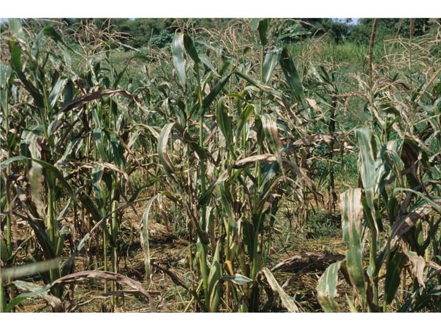

Read the survey
Group photos by field and capture time.
DATA IN
Open the review workspace Drone surveys and scouting photos
REVIEWED OUTPUTA crop-risk map and inspection list

For commercial growers and agronomy teams. Fieldwell compares drone and scouting photos, marks signs of crop stress, and turns each survey into a field-by-field inspection report.
Open a field in the sample workspace to see the planted area and the observation waiting for review.
Moisture 24%. Check the irrigation line before the next application.

One drone survey can contain hundreds of overlapping images. The useful job is to compare new observations with the last survey and group repeated signs of stress into areas a field team can inspect.
It supports scouting. A photograph alone cannot confirm disease, nutrient deficiency or a treatment.
How a survey becomes an inspection list
It supports scouting. A photograph alone cannot confirm disease, nutrient deficiency or a treatment.
Group photos by field and capture time.
Drone surveys and scouting photos
REVIEWED OUTPUTA crop-risk map and inspection list
Choose the observation types you want to inspect. This view filters the supplied survey records; it does not diagnose a crop.
Read the observation and its owner before taking the next step.
AI checks field photos and shows agronomists where to inspect next. Choose a sample case and inspect the evidence behind the finding.
Area C4: yellowing follows three adjacent crop rows. Crop coverage is lower than in the 7 November survey. The nearby service track is excluded from the crop area.
Evidence is prepared for this demonstration. Use the source reference to check the finding.See how the source becomes a specific question, a cited observation and a next action.
It supports scouting. A photograph alone cannot confirm disease, nutrient deficiency or a treatment.
Evidence-linked cases, retained reports, downloads and an operational register are implemented. Azure OpenAI and OpenAI service adapters are available; connected analysis requires a configured deployment.
Follow the development stagesAgree the baseline and review the result with the person responsible for the work.
Time the complete review, including checking source images and assigning inspections.
Compare grouped observations with the agronomist’s reviewed inspection areas.
Track whether a flagged area led to an assigned visit and a recorded outcome.
Compare two time assumptions for surveys. The estimate is calculated from your entries; it is not a measured customer result.
It supports scouting. A photograph alone cannot confirm disease, nutrient deficiency or a treatment.